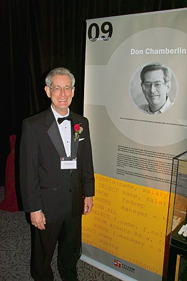

Is a domain-specific language used in programming and designed for
managing data held in a relational database management system (RDBMS), or
for stream processing in a relational data stream management system
(RDSMS). It is particularly useful in handling structured data, i.e. data
incorporating relations among entities and variables.
SQL offers two main advantages over older read–write APIs such as ISAM or
VSAM. Firstly, it introduced the concept of accessing many records with
one single command. Secondly, it eliminates the need to specify how to
reach a record, e.g. with or without an index. Originally based upon
relational algebra and tuple relational calculus, SQL consists of many
types of statements,[8] which may be informally classed as sublanguages,
commonly: a data query language (DQL),[a] a data definition language
(DDL),[b] a data control language (DCL), and a data manipulation language
(DML).[c][9] The scope of SQL includes data query, data manipulation
(insert, update and delete), data definition (schema creation and
modification), and data access control. Although SQL is essentially a
declarative language (4GL), it includes also procedural elements. SQL was
one of the first commercial languages to utilize Edgar F. Codd’s
relational model. The model was described in his influential 1970 paper,
"A Relational Model of Data for Large Shared Data Banks".[10] Despite not
entirely adhering to the relational model as described by Codd, it became
the most widely used database language.[11][12] SQL became a standard of
the American National Standards Institute (ANSI) in 1986, and of the
International Organization for Standardization (ISO) in 1987.[13] Since
then, the standard has been revised to include a larger set of features.
Despite the existence of such standards, most SQL code is not completely
portable among different database systems without adjustments.
History:

SQL was initially developed at IBM by Donald D. Chamberlin and Raymond F.
Boyce after learning about the relational model from Ted Codd[14] in the
early 1970s.[15] This version, initially called SEQUEL (Structured English
Query Language), was designed to manipulate and retrieve data stored in
IBM's original quasi-relational database management system, System R,
which a group at IBM San Jose Research Laboratory had developed during the
1970s.
Chamberlin and Boyce's first attempt of a relational database language was
Square, but it was difficult to use due to subscript notation. After
moving to the San Jose Research Laboratory in 1973, they began work on
SEQUEL. The acronym SEQUEL was later changed to SQL because "SEQUEL" was a
trademark of the UK-based Hawker Siddeley Dynamics Engineering Limited
company
After testing SQL at customer test sites to determine the usefulness and
practicality of the system, IBM began developing commercial products based
on their System R prototype including System/38, SQL/DS, and DB2, which
were commercially available in 1979, 1981, and 1983, respectively. In the
late 1970s, Relational Software, Inc. (now Oracle Corporation) saw the
potential of the concepts described by Codd, Chamberlin, and Boyce, and
developed their own SQL-based RDMS with aspirations of selling it to the
U.S. Navy, Central Intelligence Agency, and other U.S. government
agencies. In June 1979, Relational Software, Inc. introduced the first
commercially available implementation of SQL, Oracle V2 (Version2) for VAX
computers.
 SQL was initially developed at IBM by Donald D. Chamberlin and Raymond F.
Boyce after learning about the relational model from Ted Codd[14] in the
early 1970s.[15] This version, initially called SEQUEL (Structured English
Query Language), was designed to manipulate and retrieve data stored in
IBM's original quasi-relational database management system, System R,
which a group at IBM San Jose Research Laboratory had developed during the
1970s.
SQL was initially developed at IBM by Donald D. Chamberlin and Raymond F.
Boyce after learning about the relational model from Ted Codd[14] in the
early 1970s.[15] This version, initially called SEQUEL (Structured English
Query Language), was designed to manipulate and retrieve data stored in
IBM's original quasi-relational database management system, System R,
which a group at IBM San Jose Research Laboratory had developed during the
1970s.